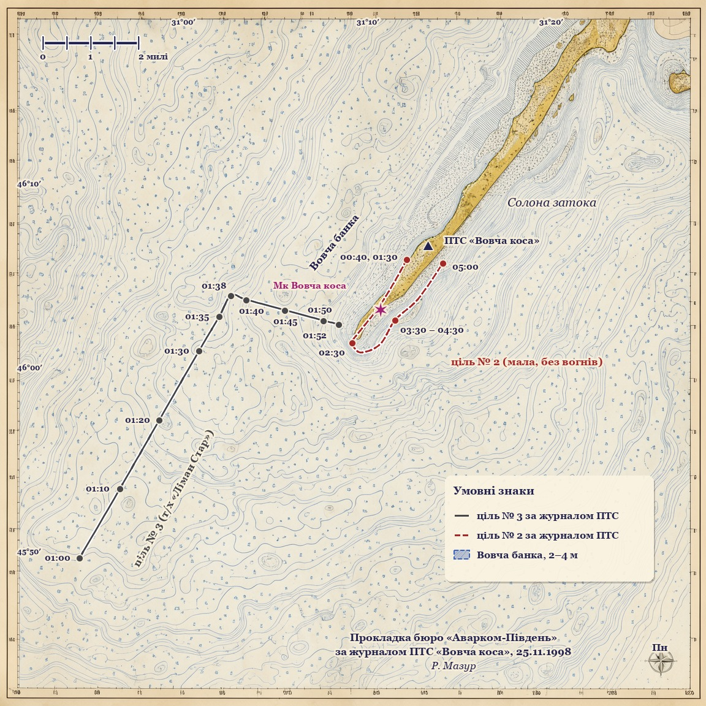

Пеленг і дистанція — від позиції ПТС «Вовча коса» (щогла на дюні) до цілі, у градусах істинних і морських милях, як записано в журналі. Час — місцевий.
| Час | Пеленг | Дист., М |
|---|---|---|
| 01:00 | 228° | 9,6 |
| 01:10 | 232° | 8,1 |
| 01:20 | 237° | 6,6 |
| 01:30 | 245° | 5,1 |
| 01:35 | 252° | 4,5 |
| 01:38 | 256° | 4,1 |
| 01:40 | 254° | 3,8 |
| 01:45 | 246° | 3,1 |
| 01:50 | 234° | 2,6 |
| 01:52 | 228° | 2,4 |
| Час | Пеленг | Дист., М |
|---|---|---|
| 00:40 | 245° | 0,7 |
| 01:30 | 245° | 0,7 |
| 02:30 | 221° | 2,7 |
| 03:30 | 209° | 1,8 |
| 04:00 | 209° | 1,8 |
| 04:30 | 209° | 1,8 |
| 05:00 | 162° | 0,4 |
Ціль № 2: у проміжках між наведеними строками журнал позицій не фіксує, окрім запису 02:00 — «рушила на ПдЗх уздовж коси». У строки 03:30, 04:00 і 04:30 у журналі зазначено: «нерухомо, окремо від берегової лінії».